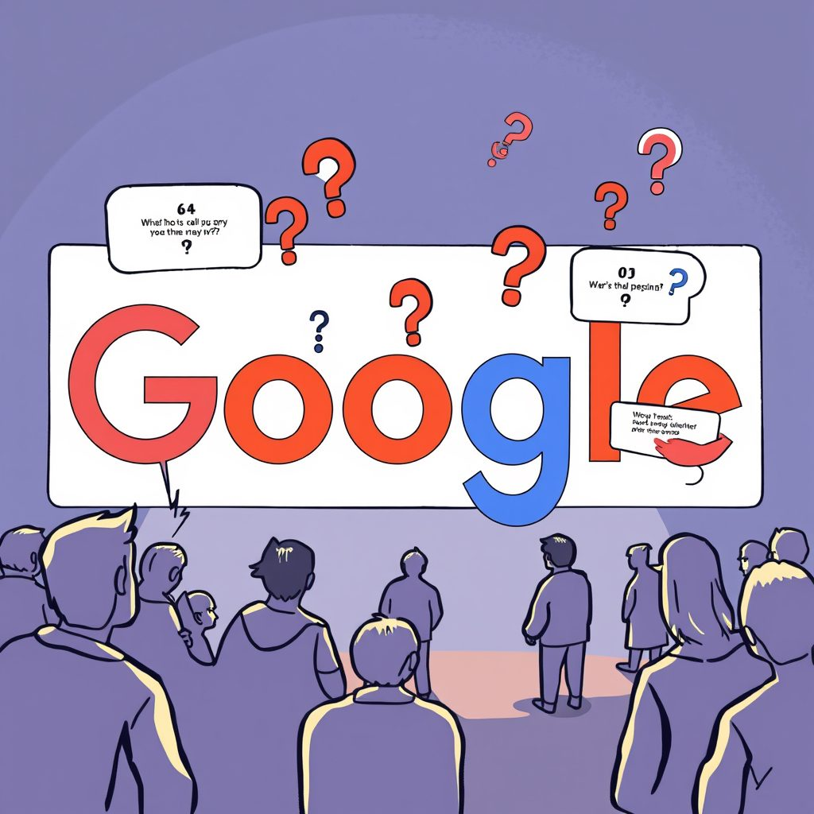
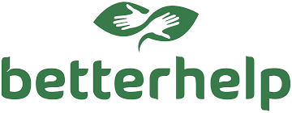

POV Blog
Notes on career mobility, culture, and building a working life on your own terms.
Three Years as a Certified Counselor: My Thoughts and What's Next
Wow, it's already been three years since I got my National Certified Counselor and Certified Career Counselor certifications! It's been a journey, and I've learned…

5 Career Questions We Were Afraid to Ask Out Loud (So We Asked Google)
As a ’90s kid with some memory of flipping through encyclopedias for school projects, I can’t think of an easier way to learn than pulling my cell phone out of my…

The Challenge of Raising a Girl With Dreams Bigger Than Mine
I read to my daughter, a spicy little eight-month-old with a bookshelf stacked in color-coded rows. While I turn the pages, she snatches the cardboard texts from my…

Mental Health in the Digital Age: BetterHelp's Ethical Breach and What It Means for Us
It took me some time to gather myself and my thoughts to write this piece. I wanted to bring visibility to this issue given the lack of media attention and my new…

Chicano Frankenstein a riveting sci-fi novel of love, family, and politics.
Author Daniel Olivas writes a powerful tale that illustrates profound life truths through a fantastical United States of America that has mastered prolonging life…
The Art of Calculated Risk: Guiding Clients Towards Confidence and Success
During my time working predominantly with low-income, first-generation Americans, one recurring theme in our sessions was the struggle my clients faced when…

A Million Miles Away (2023): A Cinematic Journey of Inspiration for Career Development
In the tapestry of my public school years, one of the key threads woven into my personal and academic development came from films that portrayed the Chicano…

The Changing Landscape of Work: A Career Counselor Explores the 'Careers are Dying' Trend on TikTok"
The "Careers are dying" trend on TikTok has sparked an important conversation around the changing landscape of work and the values of younger generations. As a…

Tools for Achieving Upward Social Mobility for Low-Income Families
Achieving upward social mobility can seem like an impossible dream for low-income families. As a first-generation college graduate, I understand the power of higher…

10 Tips for Career Alignment as a NBCC Fellow
Alina Quintana, M.S. 2022, B.A. 2016 She/Ella. 2020-2021 Master's Fellow, National Board of Certified Counselors/Association for Addiction Professionals. Current…